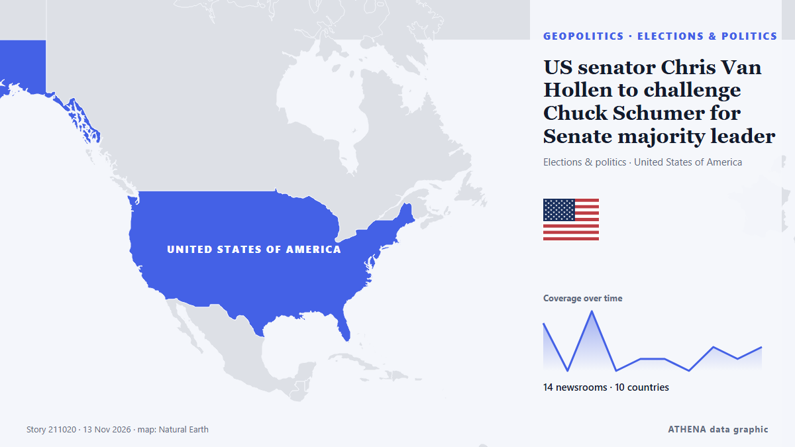

Elections & politics
SponsoredPresented by  Cybernetics and Artificial Intelligence Lab Welcome to the Cybernetics and Artificial Intelligence Laboratory, established at the Department of Business Administration of the National and Kapodistrian University of Athens. The lab is headed by Professor Dimitrios Thomakos. The lab aims to do research that can be published in top venues. Our research uses tools and methods of Artificial Intelligence, and lies in the following areas: - Forecasting - Decision making - Cyber security - Finance We are always looking forward to collaborating with exceptional students!
Cybernetics and Artificial Intelligence Lab Welcome to the Cybernetics and Artificial Intelligence Laboratory, established at the Department of Business Administration of the National and Kapodistrian University of Athens. The lab is headed by Professor Dimitrios Thomakos. The lab aims to do research that can be published in top venues. Our research uses tools and methods of Artificial Intelligence, and lies in the following areas: - Forecasting - Decision making - Cyber security - Finance We are always looking forward to collaborating with exceptional students!
| 31 Oct | 0 |
|---|---|
| 1 Nov | 1 |
| 2 Nov | 0 |
| 3 Nov | 1 |
| 4 Nov | 1 |
| 5 Nov | 0 |
| 6 Nov | 1 |
| 7 Nov | 0 |
| 8 Nov | 1 |
| 9 Nov | 4 |
| 10 Nov | 4 |
| 11 Nov | 3 |
| 12 Nov | 2 |
| 13 Nov | 2 |

US senator Chris Van Hollen to challenge Chuck Schumer for Senate majority leader
Chris Van Hollen, who has support from some of the more vocal progressives within the Democratic party, is the first to openly challenge long-term Democratic Senate leader Chuck Schumer's bid. from Euronews English
Scott Colom, a Democrat, wins Mississippi Senate seat in historic upset
On “Forbes Newsroom,” NAACP President Derrick Johnson discussed the still-unresolved Mississippi Senate race in which Democrat Scott Colom is up by about 2500 against Rpublican incumbent Cindy… from Forbes Business
Abdul El-Sayed on Democratic leadership, health care access and inspiring a new generation
With New Hampshire and Georgia staying in Democratic hands, Republicans now look to Michigan for a pickup, where Democrat Abdul El-Sayed is competing with Republican Mike Rogers. from France 24 English
LOCAL ELECTIONS 2026: LIVE | First results show ANC support declined in traditional strongholds
Special voting gets underway on Monday and will continue on Tuesday. from SABC News
Meet the members sworn in to Israel's 26th Knesset
The new Knesset includes 120 lawmakers from 11 party lists. from Haaretz (English)
Mississippi Democrat flips US Senate seat in stunning upset
Hiram Revels is first Black senator the United States ever elected. from Express Tribune
Trump says Gulf allies urged restraint on Iran, admits war hurt Republicans in midterms
With the political constraints imposed by the US midterm elections lifted, Donald Trump may become more erratic and unpredictable. from The Scotsman
With US midterms underway, courts rebuff Trump's pressure on state election officials
Federal judges have repeatedly rejected the Trump administration's efforts to wrest control over state voting processes and intimidate state and local elections officials. from Los Angeles Times (World)
Van Hollen to challenge Schumer for Senate Democratic leader, saying voters ‘called for change’
Senator Chris Van Hollen has announced his candidacy for Senate Majority Leader, challenging incumbent Chuck Schumer. from Arab News
Democratic leader Hakeem Jeffries announces bid for US House speaker
'I write to humbly request your support in connection with my candidacy to serve as the next Speaker of the House of Representatives,' says Jeffries in letter. from Anadolu Agency (English)
European Parliament calls for Russia's actions against Ukrainian children to be recognised as genocide
The European Parliament has urged EU countries to recognise Russia's deportation of Ukrainian children as genocide, stressing that their return must not be used as a bargaining chip in peace talks. from Ukrainska Pravda (English)
Spanish parliament passes housing measures after general strike
The eviction of 87-year-old Madrid pensioner Maricarmen Abascal from her lifelong home in September, and her subsequent death, sparked national uproar. from Le Monde (English)
US Republicans elect Jim Jordan as House minority leader
Jordan defeats outgoing House Majority Leader Steve Scalise in closed-door election in 106-73 vote. from Anadolu Agency (English)
Hasina seeks new passport in clearest sign of Bangladesh return
The request marks the clearest step by Hasina to act on her plan to return to Bangladesh in December. from Express Tribune
Trump approval holds at 32%, near lowest of his career, Reuters Ipsos poll finds
The poll showed just 21% of Americans giving Trump a thumbs-up on his management of the cost of living. from The Straits Times
Israel: Eisenkot proposes October 7 probe as new Knesset sworn in
Ex-IDF chief Gadi Eisenkot has yet to forge a coalition that would allow him to replace Benjamin Netanyahu, despite the new Knesset being dominated by the critics of the current prime minister. from DW English
California voters reject measure to tax the wealth of billionaires
California voters have rejected a first-in-the-nation tax on the net worth of billionaires following a contentious ballot fight that generated huge spending by some prominent tech leaders eager to… from France 24 English
Merz nominates Ilse Aigner as Germany's president
German Chancellor Friedrich Merz formally nominated Bavarian State Parliament's President Ilse Aigner as the country's next president, paving the way for her to become Germany's first female… from AzerNews
Carney to raise foreign interference concerns with Xi in meeting
Prime Minister Mark Carney and President Xi Jinping are expected to meet in person at the Asia Pacific Economic Cooperation summit in Shenzhen, China. from Global News (World)